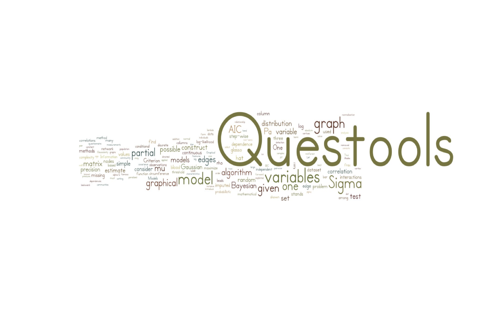

Questools is a visualization and analysis toolkit for Questionnaire datasets. To use this package, you will need the R statistical computing environment (version 3.0 or later). 
We highly recommend installation of Questools through our github. For installation in R you can use devtools package:
install.packages("devtools")
devtools::install_github("bAIo-lab/Questools")
library(Questools)